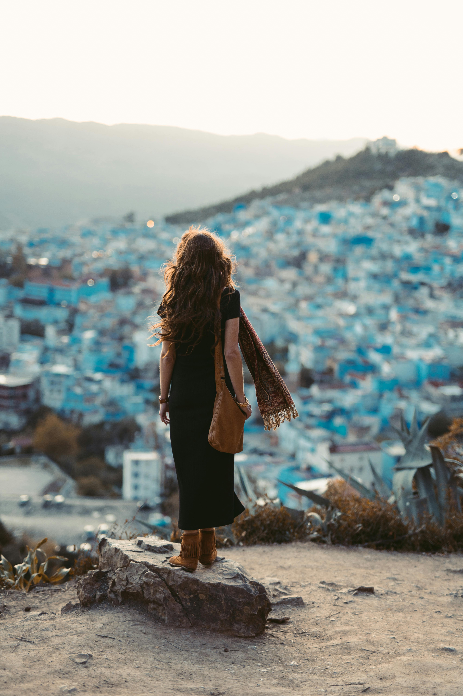

Marrakech
45.2k
Place Jemaa el-Fna
Le cœur battant de la ville rouge

RetourLe Royaume des sens, entre désert d'ocre et cités impériales
Le Maroc est une terre de magie où l'histoire s'écrit dans les méandres des médinas millénaires. Des sommets enneigés de l'Atlas aux dunes dorées du Sahara, en passant par les côtes atlantiques ventées, le Royaume offre une diversité de paysages unique. Terre d'hospitalité légendaire, le Maroc est une invitation permanente au voyage, à la découverte de saveurs épicées et d'un artisanat d'une finesse absolue.
Découvrez les 15 joyaux du Royaume
Le cœur battant de la ville rouge

Plus grande zone piétonne au monde

Un labyrinthe azur dans les montagnes

Le désert à perte de vue

La cité des vents et des artistes

Chef-d'œuvre de l'architecture marocaine

Ksar légendaire classé à l'UNESCO
Symboles de la capitale impériale

Vestiges de l'Empire Romain au Maroc

Falaises vertigineuses de l'Atlas

Fraîcheur et cascades près de Marrakech

Soleil 300 jours par an
Là où la Méditerranée rencontre l'Atlantique
La plus belle porte du monde arabe

Paradis naturel caché près de Chefchaouen
Un carrefour de civilisations entre l'Afrique, l'Europe et l'Orient.
L'histoire du Maroc est une épopée millénaire portée par de grandes dynasties (Idrissides, Almoravides, Almohades, Mérinides, Saadiens, Alaouites). Ce riche passé a forgé une identité plurielle où les racines berbères, les apports arabes, andalous et subsahariens s'entremêlent pour créer un patrimoine matériel et immatériel d'une valeur inestimable.
Zellige, tadelakt, poterie de Fès ou tapis berbères : un savoir-faire transmis de génération en génération.
De la musique Gnaoua spirituelle au Malhoun poétique, les sons du Maroc racontent son âme métissée.
Rabat, Meknès, Fès et Marrakech : quatre cités témoins de la grandeur des empires marocains.
L'Arganier, "l'or liquide" du Maroc, et la sagesse des populations de l'Atlas et du désert.

L'excellence marocaine s'invite chez vous. Des pièces uniques façonnées avec passion par nos maîtres artisans.
 En stock
En stock
Tapis en laine pure, tissé à la main par les femmes berbères du Moyen-Atlas.
 En stock
En stock
100% pure et pressée à froid. L'or liquide pour vos soins cosmétiques ou culinaires.
 En stock
En stock
Travail de dinanderie fine pour créer une ambiance magique avec des jeux d'ombre.
Cuir de chèvre tanné naturellement, brodé avec soin pour un confort absolu.
Poterie peinte à la main avec les motifs traditionnels bleus de Fès ou multicolores de Safi.
Ras-el-hanout, safran de Taliouine et cumin de l'Atlas pour sublimer vos plats.

Médina, Marrakech

Fès Médina

Hivernage, Marrakech

Médina Kasbah

Montagnes de l'Atlas

Baie d'Agadir
La cuisine marocaine est une symphonie de saveurs. Épices, fruits secs, herbes fraîches et cuissons lentes se marient pour créer l'une des gastronomies les plus réputées au monde.
Semoule fine avec sept légumes et viande fondante.
Mijoté aux pruneaux, amandes grillées et miel.
Fine pâte feuilletée au pigeon ou poulet, amandes et cannelle.
Soupe traditionnelle réconfortante aux lentilles et pois chiches.
Agneau entier rôti à la broche, fondant à l'intérieur.
Plat cuit 12h dans un pot de terre sous les cendres du hammam.
Petits triangles croustillants à la viande ou au fromage.
Salade cuite d'aubergines et de tomates aux épices.
Plat à base de crêpes émincées, poulet, lentilles et fenugrec.
"Le whisky marocain", symbole de l'hospitalité.
Pâtisserie fine à la pâte d'amande et eau de fleur d'oranger.
Gâteau de fête au miel, sésame et épices.
Le Maroc vit au rythme de célébrations grandioses alliant art, musique et traditions.
L'un des plus grands festivals de musique au monde à Rabat.
Rencontres musicales et spirituelles magiques à Essaouira.
Le rendez-vous glamour du septième art international.
Les saisons idéales (Avril-Juin et Septembre-Novembre). Les températures sont parfaites pour visiter les villes impériales et l'Atlas.
Parfait pour le désert du Sahara (nuits fraîches mais journées ensoleillées) et pour skier dans l'Atlas à Oukaïmeden.
Pays très sûr. Vigilance habituelle dans les souks (rabatteurs). Le Maroc est réputé pour sa stabilité.
Aucun vaccin obligatoire. Privilégiez l'eau en bouteille capsulée. Réseau de cliniques privées excellent.
Dirham Marocain (MAD). Le paiement par carte est généralisé en ville, mais prévoyez du cash pour les souks.
L'Arabe (Darija) et l'Amazigh sont officiels. Le Français est parlé partout. L'Anglais progresse vite.
Spécialiste Villes Impériales
Driss vous fera découvrir les secrets des palais et les trésors cachés des médinas de Fès et Marrakech.
Guide Désert & Atlas
Expert des dunes de Merzouga et des sentiers de l'Atlas pour une aventure authentique et sécurisée.
Experte Gastronomie & Art
Malika vous initiera aux saveurs marocaines avec des ateliers de cuisine et des visites d'ateliers d'artisanat.